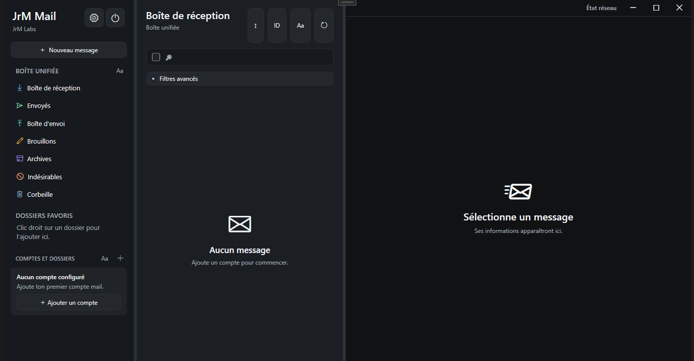

JrM Mail
JrM Mail est un client de messagerie Windows développé par JrM Labs. Il permet de consulter, rechercher, organiser et envoyer des e-mails depuis plusieurs comptes.

Connexion à Gmail
La connexion Google permet à JrM Mail de synchroniser vos dossiers et messages Gmail, de gérer les messages et d’envoyer des e-mails depuis votre compte. L’autorisation est donnée dans votre navigateur.
Consultez la politique de confidentialité et les conditions d’utilisation.